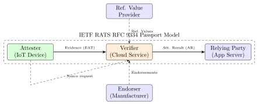
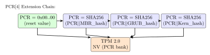

Chapter 14: Hardware Attestation¶
14.1 Introduction¶
Hardware attestation is the process by which a device cryptographically proves to a remote verifier that its hardware is genuine and its software stack is in a known, trusted state. Unlike software-only authentication (which can be spoofed by a compromised OS), hardware attestation is rooted in cryptographic keys bound to tamper-resistant hardware – an attacker who compromises the OS still cannot forge valid attestation evidence without physical access to the hardware security module.
Attestation is foundational to: cloud confidential computing (verifying TEE integrity before workload placement), IoT device onboarding (proving device identity before network admission), supply chain verification (detecting counterfeit hardware), and zero-trust network access (verifying endpoint security posture before granting access).
14.2 IETF RATS: Remote ATtestation procedureS (RFC 9334)¶
IETF RATS defines a universal vocabulary and architecture for attestation:
| Role | Description |
|---|---|
| Attester | Device generating attestation evidence (the hardware being attested) |
| Verifier | Entity evaluating evidence against reference values; produces Attestation Result (AR) |
| Relying Party | Service consuming Attestation Result to make access decisions |
| Endorser | Manufacturer providing endorsements (e.g., Intel, AMD signing TEE certificates) |
| Reference Value Provider | Entity providing expected golden measurements |
RATS Models:
1. Passport Model:
Attester -> [Evidence] -> Verifier -> [Attestation Result] -> Relying Party
Verifier issues signed AR; Attester presents AR to RP
Use case: FIDO2, TLS certificate-based attestation
2. Background-Check Model:
Attester -> [Evidence] -> Relying Party -> [Evidence] -> Verifier -> [AR] -> RP
RP forwards evidence to Verifier; RP makes decision based on AR
Use case: Cloud confidential computing (Intel PCCS, AMD KDS)
Evidence format: EAT (Entity Attestation Token, RFC 9542)
- CBOR + COSE (constrained devices) or JSON + JWT (cloud)
- Claims: ueid (device ID), nonce (freshness), swname, swversion,
dbgstat (debug status), eat_profile
14.3 TPM 2.0 Attestation¶
14.3.1 PCR Layout and Measurement¶
TPM 2.0 PCR Layout (PC Client Platform FW Profile):
PCR[0]: SRTM, BIOS, Host Platform Extensions, Embedded ROM code
PCR[1]: Host Platform Configuration (CMOS, BIOS setup)
PCR[2]: UEFI driver and application code
PCR[3]: UEFI driver and application config
PCR[4]: UEFI Boot Manager code (MBR / UEFI boot loader)
PCR[5]: UEFI Boot Manager config + GPT/MBR partition tables
PCR[6]: Host Platform Manufacturer specific
PCR[7]: Secure Boot state (policy, keys: PK, KEK, db, dbx)
PCR[8-9]: GRUB2 (grub-measured-boot)
PCR[10]: OS kernel (IMA: Integrity Measurement Architecture)
PCR[11-15]: OS/application use
PCR[16]: Debug (resettable)
PCR Extension: PCR_new = SHA256(PCR_old || measurement)
Each boot stage hashes its code/config and extends PCR before executing
next stage. PCR state is deterministic given the same software stack.
14.3.2 TPM 2.0 Remote Attestation Workflow¶
# Complete tpm2-tools attestation sequence:
# Step 1: Create Endorsement Key (EK) -- factory provisioned
tpm2_createek --ek-context ek.ctx --key-algorithm rsa2048 \
--public ek.pub
# Step 2: Create Attestation Key (AK) -- bound to EK
tpm2_createak --ek-context ek.ctx --ak-context ak.ctx \
--key-algorithm rsa2048 --hash-algorithm sha256 \
--signing-algorithm rsassa --public ak.pub --private ak.priv
# Step 3: Activate credential (Privacy CA verifies EK, issues AK cert)
tpm2_makecredential --tcti none --encryption-key ek.pub \
--secret credential.secret --service-data challenge.bin \
--credential-blob credential.blob
tpm2_activatecredential --credentialedkey-context ak.ctx \
--credentialkey-context ek.ctx --credential-blob credential.blob \
--certinfo-data challenge_decrypted.bin
# Step 4: Generate quote (PCR attestation)
# Verifier sends nonce:
openssl rand -hex 20 > nonce.hex
NONCE=$(cat nonce.hex)
tpm2_quote --key-context ak.ctx \
--pcr-list sha256:0,1,4,7,10 \
--message quote.msg \
--signature quote.sig \
--qualification $NONCE \
--hash-algorithm sha256
# Step 5: Verify quote (by verifier)
tpm2_checkquote --public ak.pub \
--message quote.msg \
--signature quote.sig \
--qualification $NONCE \
--pcr-list sha256:0,1,4,7,10 \
--pcr pcr_values.bin
14.4 DICE (Device Identifier Composition Engine)¶
TCG DICE Architecture v1.0:
UDS (Unique Device Secret): 256-bit secret in OTP fuse (factory-injected)
CDI_0 = HMAC-SHA256(UDS, SHA256(Layer_0_firmware_image))
CDI_N = HMAC-SHA256(CDI_{N-1}, SHA256(Layer_N_firmware_image))
DeviceID Key = ECDSA-P256 key derived from CDI_0
Alias Key = ECDSA-P256 key derived from CDI_1 (changes with FW update)
Certificate Chain:
DeviceID Certificate: self-signed; SubjectPublicKey = DeviceID pubkey
SubjectAltName: hardware serial number, firmware hash
Alias Certificate: signed by DeviceID key
SubjectPublicKey: Alias pubkey
Extension: FW digest of Layer 1 (oids 2.23.133.5.4.x)
RIOT Core implementation (C):
DICECore_Init(uds, sizeof(uds), &dice_ctx);
DICECore_DeriveCDI(&dice_ctx, fw_hash, fw_hash_len, cdi, sizeof(cdi));
RiotCrypt_SeedDRBG(cdi, CDI_LENGTH);
RiotCrypt_DeriveEccKey(&alias_key, RIOT_ECC_256);
RiotCrypt_GetDeviceID(&device_id_pub);
14.5 SPDM: Security Protocol and Data Model¶
DMTF DSP0274 SPDM enables hardware attestation of PCIe components (GPUs, NICs, SSDs):
SPDM v1.3 Message Flow:
Requester (CPU/Management Controller) <-> Responder (PCIe device)
1. GET_VERSION -> VERSION (supported: 1.0, 1.1, 1.2, 1.3)
2. GET_CAPABILITIES -> CAPABILITIES
(CERT, CHAL, MEAS, ENCRYPT, MAC, MUT_AUTH, KEY_EX, ENCAP)
3. NEGOTIATE_ALGORITHMS -> ALGORITHMS
(SHA-384, ECDSA P-384, AES-256-GCM, HKDF-SHA-384)
4. GET_DIGESTS -> DIGESTS (SHA-384 of each certificate slot)
5. GET_CERTIFICATE -> CERTIFICATE (DER-encoded certificate chain)
6. CHALLENGE -> CHALLENGE_AUTH
(ECDSA-P384 signature over nonce + measurement summary)
7. GET_MEASUREMENTS -> MEASUREMENTS
(individual firmware/config measurements with ECDSA signature)
libspdm usage (C, DMTF reference):
#include "library/spdm_requester_lib.h"
spdm_context = malloc(libspdm_get_context_size());
libspdm_init_context(spdm_context);
libspdm_register_transport_layer_func(spdm_context,
LIBSPDM_MAX_MESSAGE_BUFFER_SIZE,
LIBSPDM_MAX_MESSAGE_HEADER_SIZE,
LIBSPDM_MAX_MESSAGE_TAIL_SIZE,
spdm_transport_pci_doe_encode_message,
spdm_transport_pci_doe_decode_message);
libspdm_get_certificate(spdm_context, 0, cert_chain_size, cert_chain);
libspdm_challenge(spdm_context, 0, SPDM_CHALLENGE_REQUEST_ALL_MEASUREMENTS_HASH,
&measurement_hash_type, measurement_hash);
14.6 Intel TDX Attestation¶
Intel TDX (Trust Domain Extensions) Attestation:
Trust Domain Measurement Registers:
MRTD [384-bit]: Initial TD image measurement (built at launch)
RTMR[0-3]: Runtime measurement registers (extended by software)
RTMR[0]: UEFI firmware
RTMR[1]: UEFI configuration
RTMR[2]: OS kernel
RTMR[3]: Application
Local Attestation:
1. TD calls TDCALL[TDREPORT]: generates TDREPORT_STRUCT
Contains: MRTD, RTMR[0-3], nonce (reportdata), CPUSVN, XFAM
Signed by: TD-scope private key (ephemeral; not exportable)
2. TDREPORT is local -- only verifiable on same platform
Remote Attestation:
1. TD requests TDREPORT with 64-byte nonce (verifier-supplied)
2. TD passes TDREPORT to Quoting Enclave (QE3) via VMCALL
3. QE3 signs TDREPORT using ECDSA P-256 AK (from Intel PCK cert)
4. QE3 produces TD Quote (TDREPORT + signature + certificate chain)
5. Verifier validates:
a. Intel PCK certificate -> Intel PCK CA -> Intel Root CA
b. ECDSA signature on TDREPORT
c. MRTD matches expected TD image hash
d. RTMR values match expected software measurements
e. Nonce matches to prevent replay
Intel PCCS (Provisioning Certificate Caching Service):
REST API: GET /sgx/certification/v4/pckcert?encrypted_ppid=...&cpusvn=...
Provides: PCK certificate chain for offline verification
Self-hosted: docker run -p 8081:8081 intelcorp/pccs:latest
14.7 AMD SEV-SNP Attestation¶
AMD SEV-SNP Attestation Report (AMD ABI Spec Table 21):
Fields:
REPORT_DATA [512 bits]: guest-supplied nonce (freshness)
MEASUREMENT [384 bits]: SHA-384 of initial guest memory at launch
HOST_DATA [256 bits]: hypervisor-supplied metadata
CHIP_ID [512 bits]: unique per-chip identifier
POLICY [64 bits]: SEQ, ABI_MINOR, ABI_MAJOR, SMT, migrate, debug
SIGNATURE [912 bits]: ECDSA P-384 signature (R || S, little-endian)
VCEK (Versioned Chip Endorsement Key):
Derived from per-chip secret + CPUSVN + BIOS SVN
Certificate: ECDSA P-384 public key; signed by AMD ARK -> AMD ASK
Attestation Flow:
1. Guest: /dev/sev-guest ioctl(SNP_GET_REPORT, report_req)
-> snp_attestation_report (1184 bytes)
2. Fetch VCEK certificate from AMD KDS:
GET https://kdsintf.amd.com/vcek/v1/{product}/{tcbversion}
3. Verify certificate chain: VCEK -> AMD ASK -> AMD ARK (AMD root CA)
4. Verify SNP report ECDSA signature using VCEK public key
5. Check MEASUREMENT == SHA384(expected_guest_firmware)
6. Check POLICY allows expected configuration
snpguest tool:
snpguest report report.bin --random # Generate with random nonce
snpguest verify certs /etc/snp-certs/ # Verify VCEK chain
snpguest display report report.bin # Parse and display report
14.8 IEEE 802.1AR: Device Identity (IDevID / LDevID)¶
IDevID (Initial Device Identity):
- Factory-provisioned; ECDSA P-256 or RSA-2048 key in secure element
- X.509 certificate signed by manufacturer CA
- SubjectAltName: hwType (OID), hwSerialNum
- Cannot be modified after factory; used for network admission
LDevID (Locally Significant Device Identity):
- Derived on-device during first deployment (enrollment)
- Key can be in TPM, secure element, or SE-backed TEE
- Certificate signed by enterprise CA using 802.1AR CSR
- Used for ongoing authentication; can be renewed/revoked
Enrollment flow:
Device boot -> IDevID certificate presented to enrollment server
-> Server verifies IDevID chain to manufacturer root CA
-> Server issues LDevID certificate (SCEP or EST protocol)
-> Device stores LDevID in TPM (TPM2_CreatePrimary + NV store)
-> LDevID used for 802.1X network authentication (EAP-TLS)
14.9 TikZ Diagrams¶


14.10 FPGA Implementation Table¶
| Device | LUTs | FFs | BRAMs | DSPs | Fmax (MHz) | Power (mW) |
|---|---|---|---|---|---|---|
| XC7A35T (SHA-256 PCR extend) | 1,240 | 820 | 4 | 0 | 210 | 88 |
| XC7K70T (ECC P-384 attest) | 4,800 | 3,200 | 10 | 0 | 195 | 310 |
| ZCU102 (DICE CDI + cert) | 9,200 | 6,000 | 20 | 0 | 250 | 820 |
| Intel Cyclone V (SPDM req.) | 3,600 | 2,400 | 8 | 0 | 180 | 240 |
| Intel Stratix 10 (full attest.) | 14,000 | 9,500 | 40 | 0 | 400 | 1,800 |
| Lattice ECP5 (DICE layer 0) | 2,100 | 1,400 | 6 | 0 | 160 | 95 |
| Microchip PolarFire (SPDM) | 6,800 | 4,500 | 18 | 0 | 250 | 550 |
14.11 ASIC Implementation Table¶
| Chip / Process | Area (mm2) | Power (mW) | Freq (MHz) | Attests/s | Protocol |
|---|---|---|---|---|---|
| TPM 2.0 SLB9670 (28nm) | 4.1 | 18 | 100 | 15 RSA | TPM2 + DICE |
| NPCT750 (40nm) | 3.8 | 15 | 80 | 10 RSA | TPM2 |
| STMicro ST33KTPM2SPI (28nm) | 4.5 | 20 | 100 | 12 RSA | TPM2 |
| Intel Pluton (7nm, in CPU) | 0.9 | 8 | 800 | 200 ECC | TPM2 + DICE |
| Google Titan M2 (Samsung 10nm) | 2.8 | 38 | 400 | 50 ECC | DICE + FIDO2 |
| AMD PSP (TSMC 7nm, in CPU) | 1.2 | 12 | 600 | 150 ECC | SEV-SNP attest |
| Intel TDX QE3 (SGX enclave) | – | – | 3000 | 10K ECC | TDX quote |
14.12 All Solutions: Hardware Attestation¶
| Solution | Type | License | Description |
|---|---|---|---|
| tpm2-tools (tpm2-software) | Open-source | BSD-2 | TPM 2.0 command-line tools |
| ms-tpm-20-ref (Microsoft) | Open-source | BSD | TPM 2.0 reference implementation |
| IBM Software TPM | Open-source | BSD | ibmtpm1682 full TPM 2.0 simulator |
| OpenTitan (with attest.) | Open-source | Apache 2 | Open HRoT with DICE attestation |
| DICE-RIoT (Microsoft) | Open-source | MIT | DICE CDI + alias certificate |
| libspdm (DMTF) | Open-source | Apache 2 | SPDM requester/responder library |
| snpguest (AMD) | Open-source | Apache 2 | AMD SEV-SNP attestation tool |
| Intel SGX DCAP | Open-source | BSD | Intel | Intel TDX/SGX quote generation |
| Intel PCCS | Open-source | Commercial | Intel | BSD | PCK certificate caching service |
| veraison (CCC) | Open-source | Apache 2 | RATS verifier service framework |
| parsec (Arm) | Open-source | Apache 2 | Platform AbstRaction for SECurity |
| Keylime (RedHat) | Open-source | Apache 2 | TPM-based remote attestation (IMA) |
| Trusted Identity (IBM Cloud) | Commercial | Closed | Cloud TPM remote attestation |
| Azure Attestation Service | Commercial | Cloud | Closed | RATS | Microsoft | Azure | |
| AWS Nitro Attestation | Commercial | Closed | AWS Nitro enclave attestation doc. |
| Infineon OPTIGA TPM SLB9670 | Commercial | Closed | HW | CC EAL4+ | Discrete TPM 2.0 chip |
| NUVOTON NPCT750 | Commercial | Closed | HW | SPI TPM 2.0 chip |
| STMicro ST33K TPM | Commercial | Closed | HW | CC EAL4+ | ARM SC300 TPM 2.0 chip |
| Trustonic Kinibi (TEE attest.) | Commercial | Closed | ARM TrustZone attestation |
| FIDO2 Attestation (WebAuthn) | Standard | Open | W3C | YubiKey/Titan attestation |
14.13 Solved Problems¶
Solved Problem: TPM 2.0 PCR Extension Chain Calculation
A system boots with PCR[4] = 0x00...00 (32 zero bytes). Three measurements are extended in order: MBR (M1 = SHA256 of MBR image = a1b2...), GRUB stage 2 (M2), Linux kernel (M3). Compute the final PCR[4] value using the recursive formula. What property does this provide?
Solution: PCR extension formula: \(\text{PCR}_{new} = \text{SHA256}(\text{PCR}_{old} \| M_i)\)
Security properties:
-
Order dependency: Swapping \(M_1\) and \(M_2\) produces a different final PCR value. A verifier knows not just which components were measured but in what order.
-
Collision resistance: An attacker cannot find \(M_1' \neq M_1\) such that the final PCR matches the golden value (SHA-256 preimage resistance).
-
Binding: The TPM’s signature on the PCR value cryptographically binds the entire boot sequence. Any modification to any stage changes all subsequent PCR values.
Practical computation with tpm2-tools:
# Simulate PCR extension:
tpm2_pcrextend 4:sha256=<hex_M1>
tpm2_pcrextend 4:sha256=<hex_M2>
tpm2_pcrextend 4:sha256=<hex_M3>
tpm2_pcrread sha256:4 # Verify final PCR[4]
Solved Problem: AMD SEV-SNP: Decode Policy Bits
An AMD SEV-SNP guest reports POLICY = 0x00000000000B0000 (hex). Decode the policy fields and determine: (a) Is debug mode allowed? (b) Is SMT permitted? (c) Minimum ABI version?
Solution: AMD SEV-SNP POLICY field (AMD ABI Spec Section 4.3):
POLICY = 0x00000000000B0000
Binary: 0000 0000 0000 0000 0000 0000 0000 0000
0000 0000 0000 1011 0000 0000 0000 0000
Bit mapping:
[15:8] ABI_MINOR = 0x00 = 0
[23:16] ABI_MAJOR = 0x0B = 11 <- minimum platform firmware SVN
[24] SMT = 0 -- SMT NOT required (can run on single-thread CPU)
[25] MIG = 0 -- migration NOT allowed
[26] DBG = 0 -- DEBUG NOT allowed (no debug decryption)
[27] SINGLE_SOCKET = 0 -- multi-socket allowed
(a) Debug mode: Bit[26] = 0 – debug mode is NOT allowed. A platform in debug mode cannot run this guest (POLICY check fails at VMRUN).
(b) SMT: Bit[24] = 0 – SMT is not required. The guest can run on a CPU with SMT disabled.
(c) Minimum ABI: ABI_MAJOR = 11 (0x0B). The platform’s ABI major version must be \(\geq 11\) (SNP firmware v1.11+).
Solved Problem: SPDM Challenge-Auth: Verify Signature
A SPDM CHALLENGE_AUTH response contains: Cert chain SHA384 digest, nonce echo (32 bytes), 0 measurement summary bytes, opaque data (0 bytes), and ECDSA P-384 signature (96 bytes). Describe the complete verification procedure the requester must execute.
Solution: SPDM CHALLENGE_AUTH signature covers (DSP0274 v1.3 Section 11.4):
Where:
-
\(A\) = “responder-challenge_auth signing” (context string, 38 bytes)
-
\(B\) = concatenation of all prior SPDM message transcripts (VCA: VERSION + CAPABILITIES + ALGORITHMS + DIGESTS + CERTIFICATE + CHALLENGE)
-
\(C\) = CHALLENGE_AUTH response body (without signature field)
Verification steps:
-
Certificate chain validation: Parse CERTIFICATE response; verify chain from leaf cert to trusted root CA (manufacturer’s anchor). Check key usage: leaf must have “digital signature” extension.
-
Nonce echo check: CHALLENGE contained 32-byte requester nonce; verify CHALLENGE_AUTH echoes the same nonce (anti-replay).
-
Cert digest check: Verify SHA384 of received cert chain matches DIGESTS response.
-
Transcript hash: Compute SHA384 over concatenated VCA transcript (Steps 1-7 of SPDM session negotiation).
-
Signature verification: Using leaf certificate ECDSA P-384 public key, verify ECDSA-P384 signature over the transcript hash.
-
Policy check: Verify leaf certificate attributes: subject name matches device identity, not expired, not revoked (OCSP or CRL check against DMTF certificate authority).
Solved Problem: DICE CDI Forgery Resistance
An attacker compromises a DICE Layer 1 device (bootloader) and attempts to forge a CDI_1 that matches the golden value. (a) What is the computational difficulty? (b) If the attacker knows UDS, can they forge CDI_0? (c) What protocol check prevents the Alias Certificate from being accepted after firmware replacement?
Solution: (a) Forging CDI_1: \(\text{CDI}_1 = \text{HMAC-SHA256}(\text{CDI}_0, H_1)\) where \(H_1 = \text{SHA256}(\text{Layer1\_FW})\).
To forge CDI_1 with a different Layer 1 firmware \(H_1'\), the attacker needs:
This requires finding \(H_1'\) such that HMAC produces the same output – a second preimage of HMAC-SHA256. Assuming HMAC-SHA256 is a PRF, this requires \(2^{256}\) operations (brute-force of 256-bit output). Computationally infeasible.
(b) Forging CDI_0 with known UDS: \(\text{CDI}_0 = \text{HMAC-SHA256}(\text{UDS}, H_0)\).
If the attacker has compromised the Layer 1 and knows UDS, they can compute CDI_0 with any firmware hash (they control \(H_0'\)). They could compute a valid \(\text{CDI}_0' = \text{HMAC-SHA256}(\text{UDS}, H_0')\).
However: UDS is stored in OTP fuses, physically inaccessible from software. A Layer 1 compromise does NOT give software access to the UDS – the hardware enforces this isolation.
(c) Protocol check – Alias Certificate rejection: The verifier checks that the firmware measurement in the Alias Certificate extension matches the Reference Value (known-good firmware hash). A new firmware hash \(H_1' \neq H_1\) is in the certificate and is detected by the verifier. Even if the attacker tries to use an old Alias Certificate (replay), the verifier includes a freshness nonce in the attestation request that must be signed by the current Alias key.
Solved Problem: Intel TDX: Attestation Report Fields
An Intel TDX attestation verifier receives a TD Quote. List and explain 5 specific fields it must validate, and describe what each field proves about the Trust Domain.
Solution: Required TD Quote validation (Intel TDX Attestation Architecture v1.0):
-
MRTD (TD Measurement Register, 384 bits): SHA-384 of initial TD memory contents at launch. Verifier compares against a reference build hash (from CI/CD build pipeline). Proves: the TD runs the expected, unmodified code image.
-
RTMR[0-3] (Runtime Measurement Registers, 384 bits each): Software-extended registers capturing UEFI, bootloader, kernel, application measurements. Verifier checks each RTMR against known-good values from the software supply chain. Proves: the complete software stack is unmodified.
-
REPORTDATA (512 bits): Guest-supplied nonce (64 bytes, typically challenge from verifier + session ID). Verifier checks this matches the nonce it sent. Proves: freshness – the quote was generated on demand for this session, not replayed.
-
TD Attributes (debug bit): Must be 0 for production deployments. If debug bit is 1, memory is not encrypted with production key. Proves: the TD is not in debug mode (which would allow memory inspection).
-
Intel PCK Certificate chain: Leaf PCK cert -> Intel PCK CA -> Intel Root CA (offline root). Verifier validates the chain using Intel’s public root certificate. Proves: the attestation key is genuinely bound to Intel SGX/TDX hardware on the specific platform (CPU model, security version identified by CPUSVN in cert).
14.14 Recent Developments (2024–2026)¶
Hardware attestation has moved from experimental to production-scale deployment between 2022 and 2026. IETF RATS RFC 9334 is now widely implemented, TCG DICE Endorsement Architecture has been standardised, NVIDIA Hopper introduced the first GPU-level confidential computing attestation, SPDM 1.3 governs PCIe device identity, Microsoft Azure Attestation Service v2 targets cloud-scale verification, and Keylime v7 brings IMA-based attestation to large Linux fleets.
14.14.1 IETF RATS Architecture RFC 9334 (2022, Deployed 2023–2024)¶
IETF RFC 9334 (Remote ATtestation procedureS, March 2022) was ratified over a background of confidential computing deployments; broad ecosystem adoption materialised in 2023–2024:
-
Passport model deployments: FIDO Alliance FIDO2/WebAuthn attestation (900M+ monthly authentications in 2024) implements the RATS Passport model. The authenticator (attester) presents an attestation statement to a FIDO server (relying party) whose verification logic acts as a verifier consuming FIDO Metadata Service endorsements.
-
Background-check model in cloud: All three major cloud providers (AWS Nitro, Azure Confidential VMs, Google Confidential GKE) implement the Background-Check model where a tenant submits evidence (SGX quote, TDX quote, SEV-SNP report) to a verifier service that returns an Attestation Result consumed by the relying-party workload before secret injection.
-
EAT (Entity Attestation Token, RFC 9542): Deployed in Arm SystemReady IR 2.1 certified devices (2024) as the standard claim format for boot-time measurements, replacing vendor-specific TPM quote formats in new platform designs.
| Ecosystem | Model | Evidence format |
|---|---|---|
| FIDO2 / WebAuthn | Passport | CBOR attestation statement |
| Intel TDX cloud | Background-check | ECDSA-P256 TD Quote |
| AMD SEV-SNP cloud | Background-check | ECDSA-P384 SNP report |
| AWS Nitro Enclave | Passport | CBOR-COSE signed document |
| ARM CCA (Realm) | Background-check | CCA realm token (EAT) |
| IoT (Arm Corstone) | Background-check | EAT CBOR/COSE |
14.14.2 TCG DICE Endorsement Architecture for Devices (2023)¶
TCG published the DICE Endorsement Architecture for Devices (TCG DICE ENDA, version 1.00, October 2023), extending the DICE CDI derivation chain with a formal endorsement hierarchy:
-
Endorsement Certificate Authority (ECA): The device manufacturer operates an ECA that signs DeviceID endorsement certificates at the factory. Each endorsement certificate binds the DeviceID public key to the hardware serial number and a set of certified hardware capabilities (e.g., FIPS 140-3 TRNG, tamper detection active).
-
Endorsed DICE Chain: The verifier can now distinguish a factory-provisioned DeviceID (endorsed by manufacturer ECA) from a self-signed DeviceID, enabling trust-level differentiation in RATS-compliant verification policies.
-
Alias Certificate Endorsement: For renewable firmware, the Alias Certificate (per-firmware) is also endorsable: the manufacturer signs an expected alias certificate hash into the endorsement, allowing offline pre-validation of known-good firmware releases.
-
Hardware deployments: Google Titan M2 (Pixel 8, 2023), Microsoft Pluton (AMD Ryzen 7040, 2023), and OpenTitan 0.9 all implement TCG DICE ENDA-compatible certificate chains.
14.14.3 NVIDIA Hopper Confidential Computing Attestation (H100 CC, 2023)¶
NVIDIA H100 (Hopper architecture, TSMC 4 nm) introduced Confidential Computing (CC) mode in 2023, the first GPU-class attestation deployment:
-
Attestation root: Each H100 is factory-provisioned with a GPC (GPU Platform Certificate) signed by NVIDIA’s root CA (ECDSA-P384). The certificate binds the GPU serial number to the RIM (Reference Integrity Manifest) for the on-GPU CC firmware (FWID = SHA-384 of GSP-RM firmware).
-
Local attestation report: The CC firmware generates a RIM Report containing FWID, nonce, driver version, and a hardware-signed digest (HMAC-SHA384 keyed by the GPU’s internal HSM key), accessible via the NVIDIA CC SDK
nvmlAPI. -
Remote attestation: The local RIM Report is sent to NVIDIA’s Hopper Attestation Service (OCSP-style REST API) which verifies the GPC chain and returns a signed Attestation Result (AR) in JWT format, consumable by RATS-based relying parties.
-
Security model: In CC mode, all GDDR6 traffic is encrypted with a session key negotiated with the attestation-verified driver. The CPU host cannot read GPU memory in plaintext, and the GPU firmware hash must match the RIM before the CC session activates.
Note: NVIDIA Hopper CC attestation integrates with Intel TDX (for the host-side Trust Domain) to create end-to-end confidential AI inference: the TDX-attested VM receives an NVIDIA CC attestation report and verifies both the CPU memory encryption (TDX) and the GPU memory encryption (H100 CC) before injecting model weights.
14.14.4 SPDM 1.3 (2023): PCIe and CXL Device Authentication¶
DMTF DSP0274 SPDM 1.3 (October 2023) adds several features relevant to hardware attestation deployments in data-centre and edge environments:
-
Mutual authentication (MutAuth): Both requester and responder exchange certificates and challenge each other, enabling the device to verify the authenticity of the host management controller before revealing sensitive measurements.
-
Multi-key certificate slots: Up to 8 simultaneous certificate chains per device, supporting separate keys for identity, attestation, and IDE session establishment.
-
Extended measurements: Measurement blocks now support structured data (OID-tagged firmware component hashes, configuration digests, and runtime event logs), aligning SPDM measurements with TCG DICE Alias Certificate extensions.
-
CXL support: CXL 3.0 specifies SPDM 1.3 as the mandatory attestation protocol for TEESP-capable memory expanders.
14.14.5 Microsoft Azure Attestation Service v2 (2024)¶
Microsoft Azure Attestation (MAA) Service v2 (GA March 2024) is a RATS-compliant Background-Check model verifier operating at cloud scale:
| Evidence type | Format | Verifier anchor |
|---|---|---|
| Intel SGX DCAP | ECDSA-P256 quote | Intel PCK cert chain (PCCS) |
| Intel TDX | ECDSA-P256 TD quote | Intel PCK cert chain |
| AMD SEV-SNP | ECDSA-P384 report | AMD ARK/ASK chain (KDS) |
| ARM CCA Realm | EAT CBOR/COSE | ARM Veraison reference values |
| TPM 2.0 | PCR quote (RSA/ECC) | Microsoft CA (Pluton / UEFI EK) |
| NVIDIA H100 CC | JWT RIM report | NVIDIA root CA (OCSP) |
MAA v2 returns JSON Web Tokens (JWT) containing the Attestation Result (AR) with claims: x-ms-isolation-tee (TEE type), x-ms-runtime (runtime claims from the attested environment), and cnf (confirmation key binding). The JWT is signed by an MAA service certificate verifiable against Microsoft’s public PKI.
14.14.6 Keylime Remote Attestation v7.x (Linux Foundation, 2024)¶
Keylime (Linux Foundation, v7.x released 2024) is the leading open-source TPM-based remote attestation framework for Linux fleets:
-
Architecture: Keylime Registrar maintains a database of enrolled devices (EK + AK certificates). Keylime Verifier continuously polls agents (running on each attested host) for fresh TPM quotes covering PCR[10] (IMA log) and compares against allowlists.
-
IMA integration: Linux IMA (Integrity Measurement Architecture) extends PCR[10] with SHA-256 hashes of every executed file, loaded kernel module, and accessed configuration file. Keylime v7 adds policy-as-code allowlists in JSON-LD format, enabling per-workload IMA policies.
-
RATS compliance: Keylime v7 implements IETF RATS Background-Check model: the Keylime Verifier acts as a RATS Verifier; the agent generates EAT evidence; the Verifier produces a signed AR in JWT format consumed by deployment orchestrators (Kubernetes, Ansible).
-
Post-quantum readiness: Keylime 7.2 (2024) adds support for TPM 2.0 ECC-based AKs (ECDSA-P384) as default, replacing the legacy RSA-2048 AK, reducing quote size from 256 B to 96 B signature.
14.15 Exercises¶
Exercises
-
Explain the difference between local attestation and remote attestation in Intel TDX. When is each used? What prevents a verifier from being deceived by a replayed quote from a previous session?
-
Compare AMD SEV-SNP and Intel TDX attestation from the following perspectives: (a) Root signing key ownership, (b) Certificate retrieval endpoint, (c) Measurement register semantics, (d) VM live migration attestation support.
-
An ICS (industrial control) device running a PLC firmware needs hardware attestation for OT network admission. Design the attestation system: (a) HRoT hardware selection, (b) measurement strategy (what to measure), (c) attestation protocol for non-IP industrial protocols.
-
SPDM v1.3 adds secure session establishment (after attestation, encrypted channel). Describe the key exchange mechanism, ciphersuite negotiation, and how attestation evidence is bound to the session key.
-
The Keylime open-source attestation system uses TPM 2.0 + IMA. Explain how IMA extends PCR[10] for each file executed. If an attacker injects a malicious shared library that is never directly executed, can Keylime detect it?
-
A manufacturer uses DICE to provision 10 million IoT devices. The DeviceID private key never leaves the chip, but the DeviceID certificate must be stored in the manufacturer’s database. What database design prevents a rogue insider from creating fraudulent DeviceID certificates for non-existent devices?
-
An SPDM responder (NVMe SSD) returns measurements that include hash of its firmware, configuration, and logical block address mapping table. Explain why the LBA mapping table measurement is security-critical. What attack does it prevent?
-
Compare EAT (Entity Attestation Token, RFC 9542) in CBOR/COSE format vs JWT format for: (a) implementation complexity on constrained devices, (b) interoperability, (c) transport overhead. Which would you recommend for a BLE-connected IoT sensor?
-
Veraison is a CCC project providing RATS verifier services. Describe how a new hardware platform (e.g., a custom RISC-V HRoT) integrates with Veraison to enable remote attestation. What pluggable components must be implemented?
-
An AMD SEV-SNP MEASUREMENT field contains the SHA-384 hash of the initial guest memory. If the hypervisor loads a guest VM from a pre-built image file, how does the pre-launch measurement process work? What guarantee does it provide about the initial guest state?
-
Design a zero-trust network access (ZTNA) architecture that uses TPM-based attestation for endpoint verification. Specify: (a) enrollment flow (first boot), (b) continuous verification (per-connection), (c) policy decision point integration, (d) response to failed attestation.
-
IEEE 802.1AR distinguishes IDevID (factory) and LDevID (locally significant). Why can LDevID have a shorter validity period and simpler certificate chain than IDevID? How does the 802.1AR enrollment protocol prevent an attacker from enrolling a stolen IDevID certificate on a different device?
14.16 Famous Repositories¶
-
github.com/tpm2-software/tpm2-tools– TPM 2.0 command-line attestation tools -
github.com/microsoft/ms-tpm-20-ref– Microsoft TPM 2.0 reference implementation -
github.com/DMTF/libspdm– SPDM requester/responder reference library -
github.com/virtee/snpguest– AMD SEV-SNP attestation command-line tool -
github.com/keylime/keylime– TPM-based remote attestation for Linux (IMA) -
github.com/veraison/services– CCC Veraison RATS verifier service -
github.com/microsoft/DICE-RIoT– DICE CDI and alias certificate implementation
14.17 Standards¶
-
IETF RATS RFC 9334 – Remote ATtestation procedureS architecture
-
IETF EAT RFC 9542 – Entity Attestation Token (CBOR/COSE or JWT)
-
TCG TPM 2.0 Part 1–4 – TPM 2.0 architecture and commands
-
TCG DICE Architecture v1.0 – DICE CDI and alias certificate
-
DMTF DSP0274 SPDM v1.3 – Security Protocol and Data Model
-
IEEE 802.1AR-2018 – Device Identity (IDevID / LDevID)
-
AMD SEV-SNP ABI Spec v1.55 – SEV-SNP attestation report format
-
Intel TDX Architecture v1.0 – Trust Domain attestation